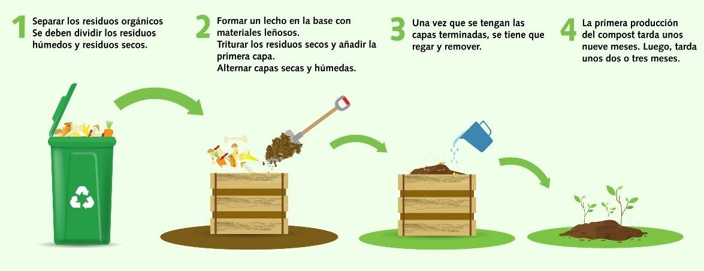

DIAGRAMA PARA PRODUCIR EL COMPOSTAJE
"composting produce diagram"
REACCIÓN DEL COMPOSTAJE BALANCEADA
"balanced composting reaction"
No hay una ecuación única y exacta porque depende de la composición de los residuos, pero se suele representar con una reacción global balanceada a partir de un compuesto orgánico típico (como la glucosa C₆H₁₂O₆) y otros nutrientes.
C6H10O5+6O2⟶6CO2+5H2O+humus+sales minerales+energía
Esta es la reaccion simplificada balanceada
CLASIFICACIÓN REACTIVOS Y PRODUCTOS
"classification of reactants and products"
REACTIVOS (reagents):
- Materia organica (Ej. Celulosa C6H10O5) : Compuesto orgánico, polímero natural, fuente de carbono y energía para los microorganismos.
- Oxigeno (O2) : Molécula inorgánica, comburente
PRODUCTOS (products):
- Dioxido de carbono (CO2) : Compuesto inorgánico, gas de desecho.
- Agua (H2O) : Compuesto inorgánico.
- Compuestos húmicos (humus) : Sustancia orgánica compleja y estable.
- Sales minerales (Ej. NH+4, NO-3, PO3-4, K+, Ca2+, Mg2+) : Compuestos inorgánicos.
- Energia (Calor) : Energía térmica liberada por la respiración microbiana.
CLASIFICACIÓN DE LOS SUELOS
"soil classification"
SEGUN SU ESTRUCTURA (according to its structure):
- Suelos arenosos. Tienen poca capacidad para retener el agua, son escasos en materia orgánica y, por lo tanto, poco fértiles.
- Suelos calizos. En ellos abundan los minerales calcáreos y las sales, lo que les confiere dureza, aridez y color blanquecino.
- Suelos humíferos. En ellos abunda la materia orgánica en descomposición. Son de tierra negra, muy fértiles y retienen muy bien el agua.
- Suelos arcillosos. Están compuestos por granos finos que retienen muy bien el agua, por lo que suelen inundarse con facilidad.
- Suelos pedregosos. Están compuestos por rocas de distintos tamaños, son muy porosos y retienen muy poca agua.
SEGUN SUS CARACTERISTICAS FISICAS (according to their physical characteristics):
- Alfisoles. Son suelos arcillosos ricos en hierro. Son fértiles y productivos.
- Andisoles. Son suelos en los que predomina la ceniza volcánica.
- Aridisoles. Son suelos que se desarrollan en zonas secas, con muy poca presencia de humedad.
- Entisoles. Son suelos poco desarrollados, con presencia rocosa.
- Gelisoles. Son suelos que se encuentran en regiones muy frías y suelen estar cubiertos de nieve y hielo casi todo el año.
- Histosoles. Son suelos con mucha presencia orgánica y de color oscuro, casi negro.
- Inceptisoles. Son suelos poco desarrollados que se encuentran en regiones húmedas. Suelen albergar bosques.
- Molisoles. Son suelos húmedos, fértiles y oscuros. Predominan en áreas de praderas.
- Oxisoles. Son suelos ricos en óxidos de hierro, de color rojizo, típicos de las zonas tropicales y subtropicales. Son pobres para la actividad agrícola.
- Vertisoles. Son suelos con gran proporción de arcilla. Se encuentran en climas áridos y semiáridos.
DISEÑO DE LA COMPOSTERA
"compost bin design"